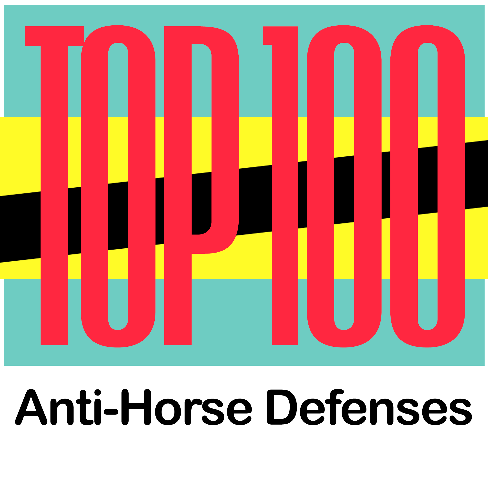

|
|
|
|
|
|
|
|
|
|
|
006000
since 1998



Top 100 Anti-Horse Defenses
| Rank | Defense |
|---|---|
| 1 | Vigilance. |
| 2 | Eat a balanced diet. Dr. Brainwater insists that good psychic health begins with what you consume. Do not eat unhealthy food and exercise your body for best results. |
| 3 | Wear an amulet. A local bead-smith or jeweler can make an anti-horse necklace, bracelet or anklet. Wear all three if you are able to. |
| 4 | Burn Anti-Horse Incense. There is much research being done on which incenses are best. Satya Mumbai is a bad choice as recent research suggests it may actually attract horses rather than deter them. |
| 5 | Install in-ground magnets. A magnet under the floor outside the bedroom door or locked gate can hinder or prevent a horse wearing metal horseshoes. |
| 6 | Carry a pocket mirror. The pocket mirror technique is still in use today because of its effectiveness. Carrying one costs you nothing. Even a small piece of aluminum foil can be polished into a mirror. |
| 7 | Learn psychic defense techniques. Defensive meditation is a powerful tool against the horses. Do not let them break your concentration, even for a moment. |
| 8 | Do not drink horse milk. This should be obvious, but horse milk and cheese should never under any circumstances be consumed. |
| 9 | Avoid horsehair pillows. Check the label on every pillow in the house. Inspect old mattresses and upholstery, especially the antique variety. Older traditionally constructed homes even used horsehair in the plaster! |
| 10 | Watch for the warning signs. |
| 11 | Sleep with a guard. Dr. Brainwater suggests having someone you trust stand watch while you rest. Do not trust anyone who accepts oats or salt as payment. |
| 12 | Train an apprentice. If you fall in psychic combat, someone must carry on in your name. |
| 13 | Submit a report on our website. We are gathering data on horse sightings all around the world. Let us add your contribution to our growing list. |
| 14 | Close the blinds. Don’t let them see inside. Don’t let them see you sleeping. |
| 15 | Sleep facing the door or window. This may give you a slight advantage if you need to enter psychic combat against an attacker quickly. |
| 16 | Put a mirror at the foot of the bed. Angled toward the window. Force the horse to face itself in the mirror, which it hates to do. |
| 17 | Decline unicorn merchandise. It is the softest point of entry for youth involvement in horsery. |
| 18 | Wash your hands. Having good hygiene is important no matter what you’re doing. |
| 19 | Measure engines in kilowatts instead of horsepower. |
| 20 | Trade your knights early. In chess, get them off the board as quickly as possible. |
| 21 | Play checkers. There are no knights on a checkerboard at all. This is a superior game to chess. |
| 22 | Skip the pony rides. Even if your kids beg you and you’re pretty sure you could take it down if you needed to. |
| 23 | Use synthetic glue. Horse psychic residue may still exist in natural glue products. |
| 24 | Change the channel on late night talking-horse reruns. Yes, they are funny, but they are inappropriate, especially if you watch them to fall asleep. |
| 25 | Think twice before buying a car named after a horse. |
| 26 | Don't follow lights into a swamp. This one seems obvious but under no circumstances should you follow swamp lights. |
| 27 | Get a dog. Dogs can deter the bad man and confuse horses with their frivolous sense of joy. |
| 28 | Build a trusted network. Psychic objects, incense and amulets travel hand to hand to thwart the horse threat. Only by relying on others can we prevail. After all, there are more of us than there are of them. |
| 29 | Know a psychic with hole experience. When you need one, you'll need one fast. Look for a psychic that specializes in psychic holes. Many believe that the horses have learned how to use them and we must combat this. |
| 30 | Read banned books. Start with More Than Mustangs by Jay Chatterborg if you can find a copy. |
| 31 | Learn the flute. Or a whistle. Horses are deterred by the sound of a whistle and can even be coerced into involuntary dancing when flute music is played at them correctly. |
| 32 | Dance the horses away. See the archive's dedicated page to dance as a powerful form of self-defensive meditation. |
| 33 | Live upstairs. Horses are reluctant to cross stairs due to the possibility of them being trapped there. Horses cannot enter the psychic realm while traversing stairs, and so they are totally defenseless when doing so. |
| 34 | Limit eye contact. If you are forced to engage a horse, avoid eye contact. They can control you after only moments. |
| 35 | Never borrow a crystal. If you don't know where it's been, don’t use other people’s crystals. Crystals can be charged with horse energy. Don’t unwittingly fall victim to the old borrowed-crystal-charged-on-horse-energy trick. |
| 36 | Always stay hydrated. |
| 37 | Choose an exit word. Pick a word that will wake you instantly from sleep. If a horse appears in your dreams, say it and wake. Don't make the word “horse” as this has been known to summon a second, larger horse. |
| 38 | Never ride in a dream. If you find yourself riding a horse in a dream, dismount and walk away immediately. The same can be said when waking from a coma or deep sleep. If you awaken to find yourself riding a horse, safely dismount without drawing attention to yourself. |
| 39 | Watch for sympathizers. They don't always know that they have been infected with horse propaganda. |
| 40 | Be kind to the horse girl, from a distance. Horse girls can be our greatest allies if we choose to give them time to come to the right conclusion. There is great power in being a horse girl. Always treat horse girls with kindness but never trust one. |
| 41 | Don’t rely on garlic only. Garlic alone won’t protect you from psychic horse attacks, though a spoonful a day can give a small psychic boost. |
| 42 | Subscribe to OUTFLANK magazine. It is the premiere magazine for horse haters. |
| 43 | Avoid corn mazes. If you are fleeing a horse, do not enter a corn maze. This is a common trick that the horses are known to pull in the fall. Horses are larger and faster than humans. They will run you down in a moment. |
| 44 | Rally your fellowman (avoid using the term NEIGHbor). My NEIGHbors? |
| 45 | Skip the zoo. Specifically, the equine attractions, including the giraffe and zebra. Hippos should also be avoided. |
| 46 | Keep geese or ducks. Plug into the bird network and put those psychic birds to good use! |
| 47 | Meditate to bring an end to the Interdimensional Cosmic War. Ending the war and banishing the demons from our realm will allow humanity to turn our attention to the horses once and for all. |
| 48 | Elongate your cranium if you are able. A long head is a strong head. |
| 49 | Grow a psychic beard if you are able. Having psychic antennae in the form of a beard or hair will help you resist the horse influence, though not every horse hater agrees. Dr. Brainwater, for example, suggests keeping a clean-shaven appearance, especially if you are looking for a job. |
| 50 | Regrow any lost teeth. Horses can use missing teeth to their advantage in a psychic battle using teeth techniques known only to them. |
| 51 | Drink psychic syrups or potions to enhance your abilities temporarily. |
| 52 | Encircle your home or bed with crystals. Charge the crystals to resist horses if possible. |
| 53 | Ring a bell/have a bell that rings outside your home when you push a button. Horses are averse to bells and it breaks their connection to the Inner Realm. |
| 54 | Get abducted by the Zorgflap aliens. Abductees often report that they have been implanted with a chip that repels horses. |
| 55 | Excessively polish your floor. Especially when using a false entrance or a hallway that can be used as a diversion. Wax or oil the floor so that it is slippery. Imagine a horse on a slick floor. The act is so embarrassing, they will become vulnerable and possibly retreat altogether. |
| 56 | Place balloons near your doors and windows. Horses fear balloons. |
| 57 | Wear a cape. The billowing can distract an attacking horse. |
| 58 | Wear mirrored sunglasses. Even better than a pocket mirror. The downside is that eye contact must be made. |
| 59 | Googly eyes to confuse the horse. |
| 60 | A rubber snake to spook attacking horses. |
| 61 | Utilize a disco ball. Horses are spooked by a disco ball. Some are small enough to be placed on a necklace, which can be both fashionable and defensive. |
| 62 | Wear a mask on the back of your head. Believe it or not, this ancient method of horse defense still works today. Often, horses will try to achieve eye contact in order to gain control of you. Wasting their time with a mask on the back of the head is sure to confuse and frustrate an attacking horse. Make sure the eyes are realistic. |
| 63 | Spread pea gravel around your house in order to hear the horses coming. |
| 64 | Build your hallways zig-zag style and just big enough for a human to walk through. |
| 65 | Get a stair-step sigil tattoo. Especially on your chest. Rip open your shirt to reveal it during psychic combat. |
| 66 | Fireproof your home. Horses are adept at fire starting. |
| 67 | Install an escape slide from your top floor. If a horse does risk climbing your stairs, you can slide down to the ground and leave the horse behind to climb down the stairs after you. |
| 68 | Spiral staircases are impossible for the horse to climb. Have them lead to a crow’s nest and you will be physically untouchable, allowing a safe vantage for psychic combat. |
| 69 | Utilize mirrored balloons for maximum effect. Bonus points for having them rise from a trap door in your house. |
| 70 | Only research horses using private browsing mode. The CIA is watching for anti-horse activity. |
| 71 | Hang a bell from your doorknob. That way, if the door is opened from the outside, the bell will alert you and spook the horse. |
| 72 | Don’t open the door for door-to-door salesmen. They are sometimes horses in disguise. Check their feet for hooves. |
| 73 | Be aware of large wooden depictions of horses. They often contain horse sympathizers hiding inside so as to gain access to your inner compound. |
| 74 | Always wear comfortable shoes. You may need to run, jump, or kick at any time if attacked by a horse. Don’t get caught with sandals on. Wear shoes to sleep and wear athletic house slippers to stay on guard at all times. |
| 75 | Grow shrubs to cover your windows; the rustling will warn you of unwanted horse peeping. |
| 76 | Buy one of those flailing inflatable tube creatures to guard your door. Horses aren’t harmed by them but they do find their arrogance enraging. They may stop briefly to destroy it, which can buy you time to run. |
| 77 | Hang a sign that reads, “YOU ARE ON STAIRS.” It may confuse the horse, causing them to question reality. Eventually, they will realize that they are not actually on stairs and continue, but this should buy you some time. |
| 78 | Employ psychological warfare. Adorn your home with paintings and graphics of horses being destroyed and defeated in battle. Clarence has paintings for sale. This will unsettle the horses. |
| 79 | Install trap doors at a building you frequent. Trap doors can be useful, especially if they are able to hold the weight of one or two people but buckle under the weight of only a single horse. |
| 80 | Use only round doorknobs. No lever knobs that can easily be pushed down with a hoof or muzzle. This forces the horse to turn the doorknob with its mind, which means it must break concentration on other things to do so. |
| 81 | Wear an anti-horse eyepatch on one or both eyes. |
| 82 | Don’t take the bait. They can find your weakness. If you find yourself in a hard-to-believe situation, there’s a good chance it’s not real. Horses have been known to fabricate sweepstakes winning tickets and illusions of long-lost lovers just to get you outside and into a hole they have devised. |
| 83 | Utilize horse-shrinking meditation techniques in which you visualize your horse attacker getting smaller and smaller until they fit in the palm of your hand. This can devastate the horse’s confidence and cause them to make a mistake. |
| 84 | Utilize the buddy system. Have one other horse hater who you can be accountable to. |
| 85 | Sponsor someone else. If you are a strong horse hater, take the time to sponsor the next generation of young and impressionable horse haters and guide them down the right path. |
| 86 | Practice psychic combat against a photo of a horse. This will prepare you mentally in a low-stakes environment. Do not keep the photo inside your house when you are done. |
| 87 | Get a library card. Knowledge is power! |
| 88 | If you hear your own name being called in your head, do not answer. This is helpful for most voices you may be hearing in your head, but especially so because horses know the power of names and getting you to respond to your own name is a hoof over the threshold of your mind. |
| 89 | Don’t always look out the same window. Vary it up and look out of as many windows as you can. Don’t be predictable. The horse who watches will be expecting you to only look out of certain windows, leaving the other ones vulnerable to spying. |
| 90 | Carry a rock in your pocket. Psychic combat can easily be disrupted by a rock to the nose. |
| 91 | Check your hands often in your dreams. If you have hooves, you must wake up immediately! Practice waking up quickly. |
| 92 | Love and be loved. Strengthen your own psychic network. To be alone is to be vulnerable. |
| 93 | Keep a lamp on all night. Since horses prefer to attack us while we sleep, keeping a bedside lamp on all night can lead them to believe you haven’t gone to sleep yet. |
| 94 | Learn psychic shooing. Enter the psychic realm and envision the horse if it’s not already plainly visible. Say “shoo, shoo!” and flail your arms, ensuring they are not hooved. Yelling “Whoa!” can also help. When the horse disappears over the horizon, you’re safe. This will help if you feel a horse sneaking up on you, especially if you focus on your speed. |
| 95 | Chew horseweed, which despite the name is more akin to an anti-horse weed. It tastes herbal and horses hate the smell. |
| 96 | Sign an anti-horse petition. If there isn’t currently one going around your area, start one. Click here for a sample of an anti-horse petition you can print at home or at your local library. |
| 97 | Humiliate the horse. If you have a sense of humor, you can easily enrage and distract even the most powerful of horses. Make fun of them and make them self-conscious. |
| 98 | Reverse roles. Become so powerful that you become the hunter and they become the hunted. Make the horses fear you. |
| 99 | Trap them between two mirrors. Turn the horse gaze upon itself into eternity. |
| 100 | Check this website for updates as often as you can. We are on the cutting edge of combating the horses. You can trust Dr. Brainwater. |